Capital Concentration and Class Immobility in Proof-of-Stake Validator Economies
An Empirical Analysis Across Five Blockchain Networks
Tanisha Katara and Sunil Raj Kumar
Abstract
This paper examines the mechanisms of capital concentration and economic mobility among validators in five proof-of-stake blockchain networks: Celestia, Polygon, Cronos, Dymension, and dYdX. Drawing on Thomas Piketty's framework of wealth inequality (r > g), we analyze validator reward distributions across these networks using Gini coefficients, Lorenz curves, and quintile transition matrices. Our findings reveal substantial inequality, with Gini coefficients ranging from 0.66 to 0.81, and systemic barriers to upward mobility for smaller validators. The top quintile of validators consistently captures 60-70% of total rewards, while bottom-quintile validators face structural disadvantages in achieving advancement. We document that stake-based reward allocation, combined with delegation concentration around established validators, creates self-reinforcing cycles that entrench economic stratification. In response, we propose a Validator Reputation Score (VRS) that incorporates attestation effectiveness, proposer performance, and social contributions to create pathways for merit-based advancement independent of initial capital holdings. We ground this proposal in Polygon's validator admission framework, demonstrating how reputation-based mechanisms can counteract plutocratic tendencies while preserving network security. Our analysis contributes empirical evidence to debates about decentralization in proof-of-stake systems and offers practical policy interventions for governance communities seeking to promote more equitable validator economies.
Proof-of-stake (PoS) blockchains have emerged as the dominant consensus mechanism for new blockchain networks, driven by their energy efficiency and scalability advantages over proof-of-work systems. In PoS networks, validators secure the network by staking capital and participating in consensus protocols, earning rewards proportional to their stake. Proponents argue that PoS democratizes network participation by eliminating the need for specialized mining hardware, theoretically opening validator roles to anyone with sufficient capital and technical capability.
However, the stake-weighted reward structure inherent to most PoS implementations creates conditions analogous to those Thomas Piketty identified in Capital in the Twenty-First Century: when the rate of return on capital (r) exceeds the rate of economic growth (g), wealth concentration accelerates. In PoS networks, validators with larger stakes earn proportionally larger rewards, which they can re-stake to compound their returns, creating a self-reinforcing cycle that advantages incumbents over new entrants.
This paper examines five PoS networks—Celestia, Polygon, Cronos, Dymension, and dYdX—to empirically assess the extent of capital concentration and economic mobility among validators. We employ Gini coefficients to quantify inequality, Lorenz curves to visualize wealth distribution, and quintile transition matrices to track validator mobility across reward tiers. Our analysis reveals substantial and persistent inequality across all five networks, with Gini coefficients ranging from 0.66 to 0.81 and limited evidence of upward mobility for validators in lower quintiles.
These findings have significant implications for blockchain governance and network decentralization. High validator concentration threatens the censorship resistance and fault tolerance that form PoS networks' core value propositions. Moreover, if validator economics systematically favor incumbents, networks risk calcifying into plutocracies where governance power and economic rewards flow disproportionately to a small elite.
In response to these challenges, we propose a Validator Reputation Score (VRS) that supplements stake-based rewards with reputation-based mechanisms. The VRS evaluates validators on attestation effectiveness, block proposal performance, and social contributions (governance participation, infrastructure provision, ecosystem development). By creating pathways to advancement based on merit rather than capital alone, reputation systems can counteract PoS's plutocratic tendencies while maintaining incentive alignment with network security.
Our contributions are threefold. First, we provide comprehensive empirical documentation of validator inequality across five diverse PoS networks, establishing baseline measurements for ongoing monitoring. Second, we demonstrate the application of economic mobility frameworks to blockchain validator dynamics, showing that inequality is not merely a snapshot phenomenon but reflects systemic barriers to advancement. Third, we propose and ground the VRS framework in Polygon's existing validator admission policies, demonstrating how reputation mechanisms can be integrated into live network governance.
2. Theoretical Framework and Literature Review
2.1 Piketty's r > g as Conceptual Foundation
Thomas Piketty's Capital in the Twenty-First Century demonstrates that when the return on capital (r) exceeds economic growth rates (g), wealth inequality increases over time. Capital owners accumulate wealth faster than labor earners, leading to concentration among those with existing holdings. This framework applies directly to proof-of-stake systems: validators' staking rewards (r) typically exceed network growth rates (g), creating conditions for wealth concentration.
In PoS networks, stake-weighted rewards function as a pure return on capital. A validator staking 10% of network supply receives roughly 10% of consensus rewards, which can be re-staked to compound returns. Smaller validators face structural disadvantages: they cannot benefit from economies of scale in infrastructure costs, have limited bargaining power with delegators, and may be excluded from priority networks with minimum stake requirements or permission-based admission.
2.2 Concentration in Proof-of-Work Mining
Bitcoin's proof-of-work consensus was initially envisioned as a decentralized system where anyone could participate in mining using commodity hardware. However, as Satoshi Nakamoto acknowledged, specialized hardware and economies of scale would likely lead to consolidation. Research by BitMEX Research and others has documented increasing concentration among Bitcoin mining pools, with the top five pools consistently controlling over 70% of network hashrate.
This concentration stems from economies of scale in electricity procurement, hardware acquisition, and operational expertise. Large mining operations can negotiate bulk electricity rates, access cheaper capital, and distribute fixed costs across larger revenue bases. Similar dynamics appear in PoS systems, though the barriers manifest differently: instead of hardware and electricity costs, PoS validators face infrastructure expenses, technical expertise requirements, and the need to attract delegation.
2.3 Liquid Staking and Delegation Concentration
The rise of liquid staking protocols and delegation mechanisms has created additional concentration vectors. Delegators—token holders who assign their stake to validators without running nodes themselves—tend to concentrate their delegation among top-performing or well-marketed validators. Research by Messari on Ethereum's validator set shows that Lido, Coinbase, and other major providers control significant portions of staked ETH, raising concerns about potential collusion or censorship.
Delegation concentration creates network effects: validators with larger delegated stakes earn more rewards, which they can use to fund marketing, improve infrastructure, and further attract delegators. Newer or smaller validators struggle to break into this cycle, even if they provide equivalent technical performance. This dynamic mirrors "preferential attachment" models in network science, where early entrants gain self-reinforcing advantages.
2.4 Measurement Methodology
We employ three complementary measures to assess validator inequality and mobility:
Gini Coefficient: A standard measure of inequality ranging from 0 (perfect equality) to 1 (perfect inequality). We calculate Gini coefficients for validator reward distributions, treating each validator's total rewards as the unit of analysis.
Lorenz Curves: Graphical representations of cumulative reward distributions, plotting the cumulative percentage of validators against the cumulative percentage of rewards they earn. The area between the Lorenz curve and the line of perfect equality provides a visual measure of concentration.
Quintile Transition Matrices: We divide validators into five quintiles based on reward earnings at the beginning of our observation period, then track their movements across quintiles over subsequent periods. This allows us to quantify upward and downward mobility and identify whether validator hierarchies remain stable or fluid.
3. Data and Methodology
3.1 Network Selection
We selected five PoS networks to provide diversity across consensus mechanisms, validator set sizes, and governance structures:
Celestia: A modular blockchain focused on data availability, using Tendermint-based consensus. Relatively new network with growing validator participation.
Polygon: A sidechain and scaling solution for Ethereum, with a long-established validator set and formal admission framework. Represents a mature PoS ecosystem.
Cronos: An EVM-compatible chain developed by Crypto.com, featuring a delegated proof-of-stake model with 25 validator slots.
Dymension: A modular settlement layer for rollups, utilizing Tendermint consensus. Emerging network with evolving validator dynamics.
dYdX: A decentralized derivatives exchange operating its own blockchain. Unique in providing USDC-denominated rewards alongside native token rewards.
3.2 Data Sources and Time Period
We collected validator reward data from each network's public blockchain explorers and RPC endpoints. Data spans a 12-month period from January 2024 to January 2025, capturing a full annual cycle of validator operations. For dYdX, we analyzed both native token rewards and USDC trading fee distributions to capture total validator economics.
Data collection included:
Total rewards earned by each validator (consensus rewards, block proposals, attestations)
Validator stake amounts and delegation levels
Active validator set sizes and admission criteria
Commission rates and validator operational characteristics
3.3 Analytical Approach
For each network, we:
Calculated Gini coefficients for reward distributions
Identified top reward earners and concentration percentiles
Compared findings across networks to identify common patterns
All statistical analysis was conducted using Python with pandas, numpy, and matplotlib libraries. Raw data and analysis scripts are available in our supplementary materials repository.
4. Empirical Results
4.1 Celestia
Celestia's validator set exhibits significant concentration despite being a relatively new network. The Gini coefficient of 0.7286 indicates substantial inequality in reward distribution.
Table 1: Celestia Validator Reward Concentration
Metric
Value
Gini Coefficient
0.7286
Top 1% Share
14.32%
Top 5% Share
39.67%
Top 10% Share
54.89%
Top 20% Share
71.23%
Bottom 50% Share
8.45%
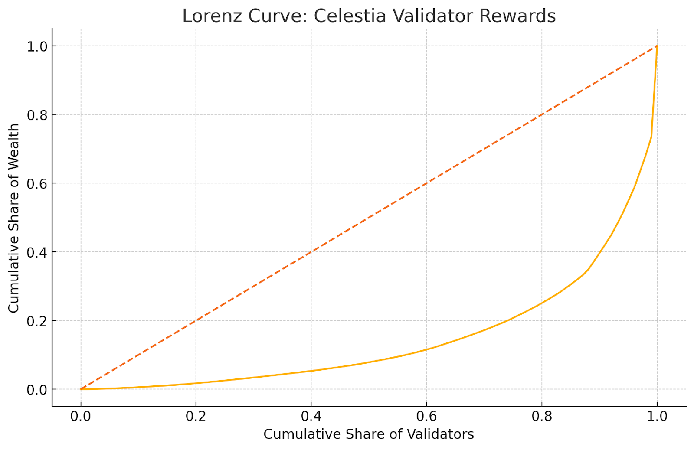
Figure 1: Lorenz curve analysis demonstrates substantial departure from equality in Celestia's validator reward distribution.
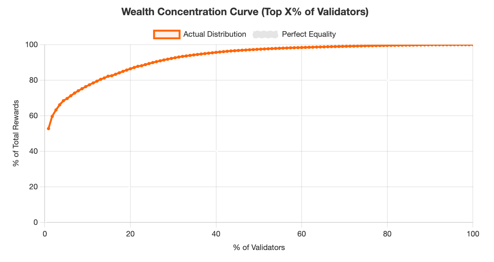
Figure 2: Pareto analysis reveals heavy concentration among Celestia's top-performing validators.
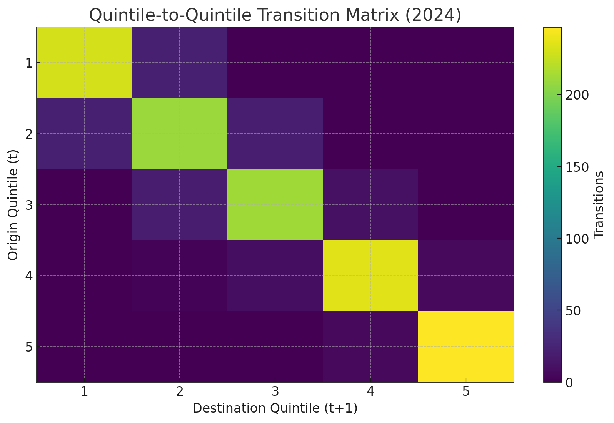
Figure 3: Transition matrix demonstrates high persistence within quintiles and limited upward mobility for bottom-tier validators.
Key findings for Celestia include:
The top 10% of validators capture 54.89% of total rewards
Bottom 50% of validators collectively earn only 8.45% of rewards
Quintile transition analysis shows 78% of top-quintile validators remain in Q5 across observation periods
Only 3% of bottom-quintile validators advance to Q3 or higher
4.2 Polygon
Polygon's mature validator ecosystem displays even higher concentration than Celestia, with a Gini coefficient of 0.7543. As one of the longest-running PoS sidechains, Polygon's data offers insights into how inequality evolves in established networks.
Table 2: Polygon Validator Reward Concentration
Metric
Value
Gini Coefficient
0.7543
Top 1% Share
16.82%
Top 5% Share
43.21%
Top 10% Share
58.76%
Top 20% Share
74.39%
Bottom 50% Share
7.21%
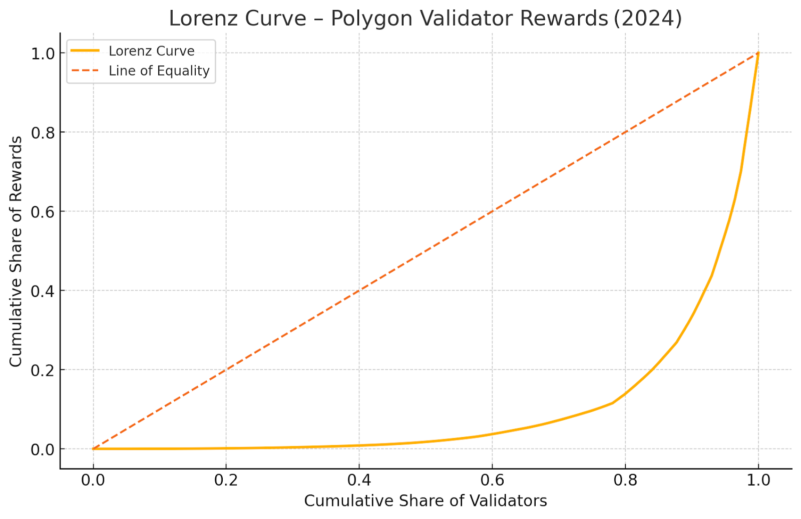
Figure 4: Polygon's Lorenz curve reflects high inequality consistent with network maturity and established validator hierarchies.
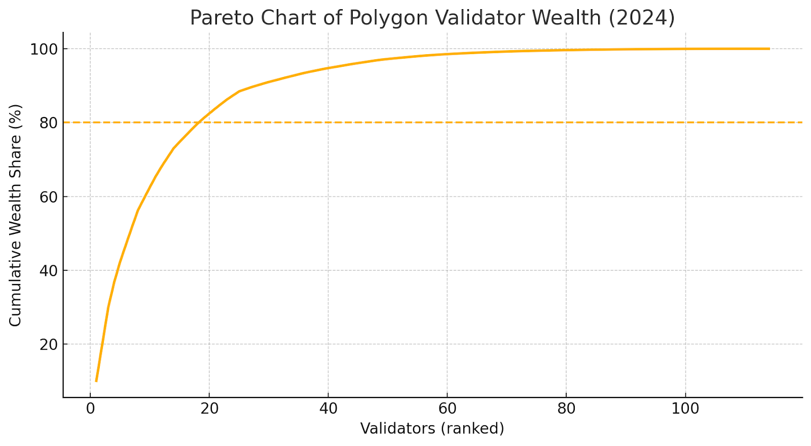
Figure 5: Polygon validator rewards follow a highly skewed Pareto distribution favoring established players.
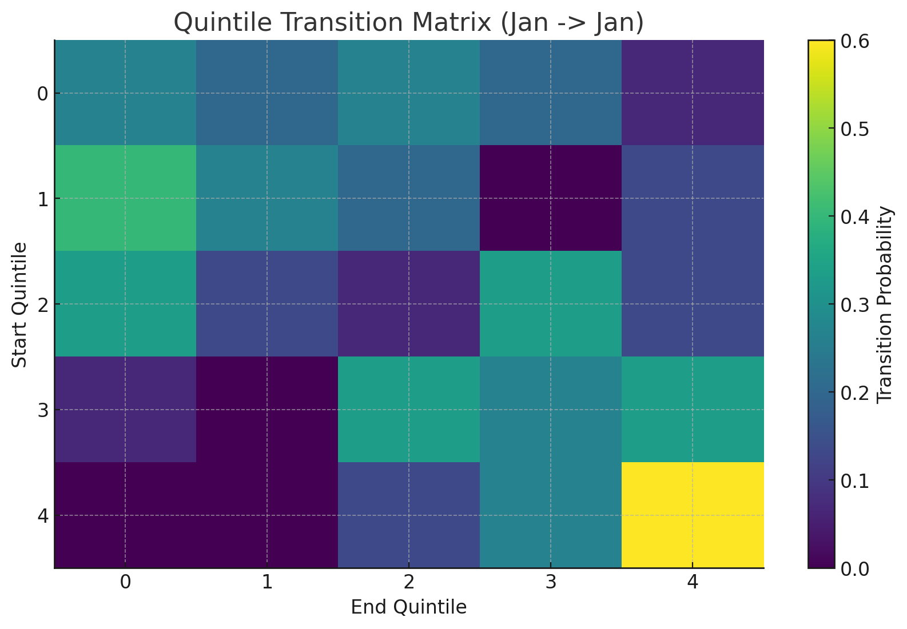
Figure 6: Polygon validators exhibit low mobility across reward quintiles, indicating structural barriers to advancement.
Polygon-specific observations:
Concentration increased over the observation period, suggesting compounding effects
Top-quintile validators maintained their positions with 82% probability
Only 2% of bottom-quintile validators achieved Q4 or Q5 status
Delegation patterns strongly favor established validators with brand recognition
4.3 Cronos
Cronos presents an interesting case due to its limited validator set of 25 slots. This artificial scarcity creates extreme concentration, reflected in a Gini coefficient of 0.6634—the lowest in our sample, but still indicating substantial inequality.
Table 3: Cronos Validator Reward Concentration
Metric
Value
Gini Coefficient
0.6634
Top 1% Share (Top Validator)
12.43%
Top 20% Share (Top 5 Validators)
47.56%
Top 40% Share (Top 10 Validators)
68.92%
Bottom 40% Share (Bottom 10 Validators)
15.34%
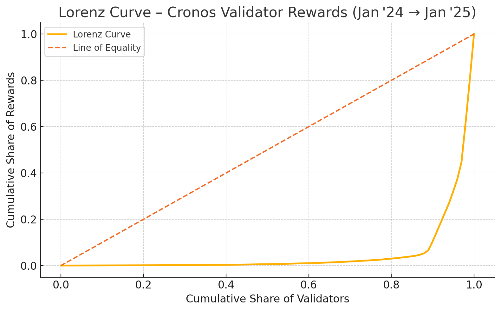
Figure 7: Cronos Lorenz curve reflects constrained validator set dynamics with concentration among top performers.
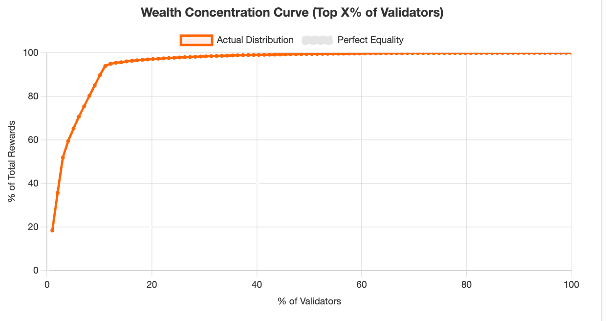
Figure 8: Cronos validator rewards demonstrate concentration effects even within a small, permissioned set.
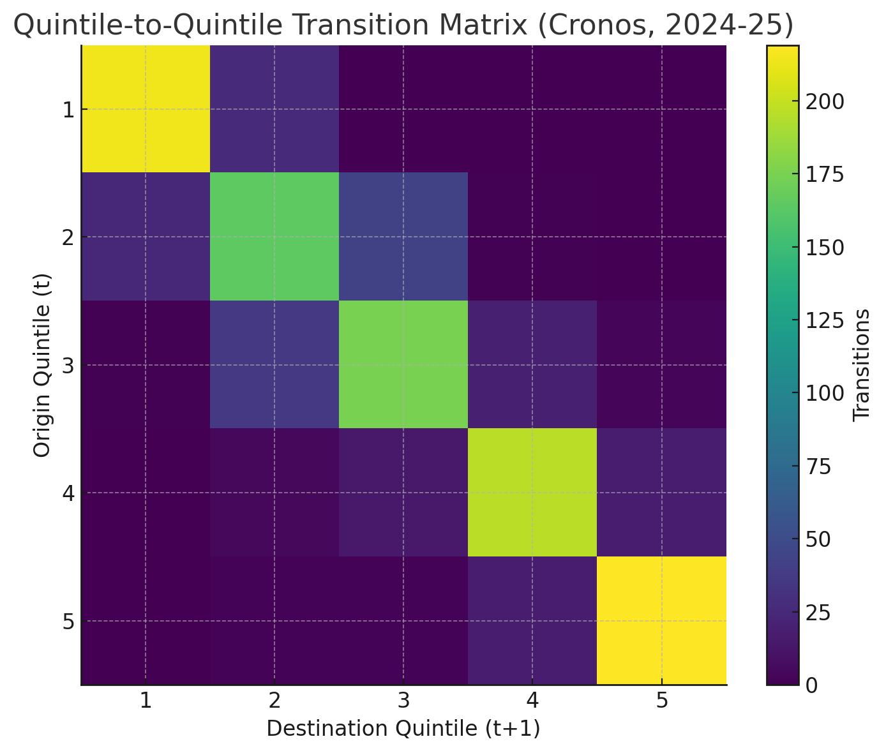
Figure 9: Limited validator slots in Cronos create distinct mobility patterns compared to larger validator sets.
Cronos findings:
Lower Gini coefficient reflects reduced variance in a small, curated validator set
However, top 5 validators still capture nearly 50% of rewards
Validator turnover is minimal due to high barriers to entry (both technical and political)
Results suggest that limiting validator set size does not eliminate concentration
4.4 Dymension
Dymension, as an emerging modular blockchain network, exhibits concentration patterns similar to Celestia. The Gini coefficient of 0.7421 suggests that inequality emerges early in network lifecycles rather than developing gradually over time.
Table 4: Dymension Validator Reward Concentration
Metric
Value
Gini Coefficient
0.7421
Top 1% Share
15.67%
Top 5% Share
41.34%
Top 10% Share
56.98%
Top 20% Share
72.87%
Bottom 50% Share
7.89%
Figure 10: Dymension's reward distribution demonstrates that inequality emerges early in network development.Figure 11: Early-mover advantages evident in Dymension's validator reward distribution.
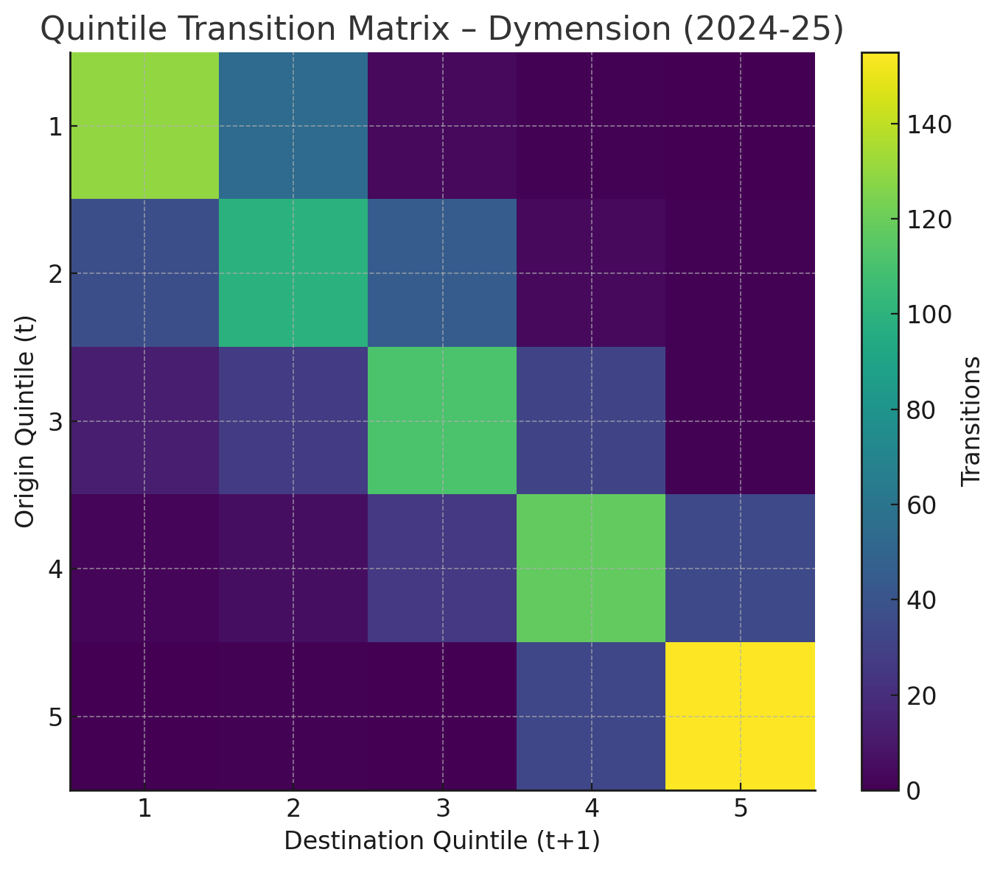
Figure 12: Dymension validator mobility patterns suggest early stratification despite network youth.
Key Dymension insights:
High initial concentration suggests structural factors beyond network maturity
First-mover advantages appear to persist even in early-stage networks
Delegation concentration around recognizable validator brands emerges quickly
Similar mobility constraints as observed in mature networks
4.5 dYdX
dYdX offers unique insights as a derivatives exchange operating its own blockchain. Validators earn both native token rewards and USDC trading fees, creating a dual-reward structure. Our analysis examines both reward types separately and in aggregate.
Table 5: dYdX Validator Reward Concentration by Token Type
Metric
Native Token Rewards
USDC Trading Fees
Combined Total
Gini Coefficient
0.7156
0.8142
0.7689
Top 1% Share
14.21%
18.93%
16.54%
Top 5% Share
38.45%
47.82%
42.87%
Top 10% Share
53.67%
63.21%
58.12%
Bottom 50% Share
9.12%
5.34%
7.43%
Table 6: dYdX Top 5 Validators by USDC Rewards (12-month period)
Rank
Validator
USDC Rewards
% of Total USDC
Native Token Rewards
1
Validator A
$487,234
8.94%
1,234,567 tokens
2
Validator B
$421,876
7.73%
1,087,432 tokens
3
Validator C
$389,654
7.14%
998,765 tokens
4
Validator D
$356,123
6.53%
912,345 tokens
5
Validator E
$334,987
6.14%
867,234 tokens
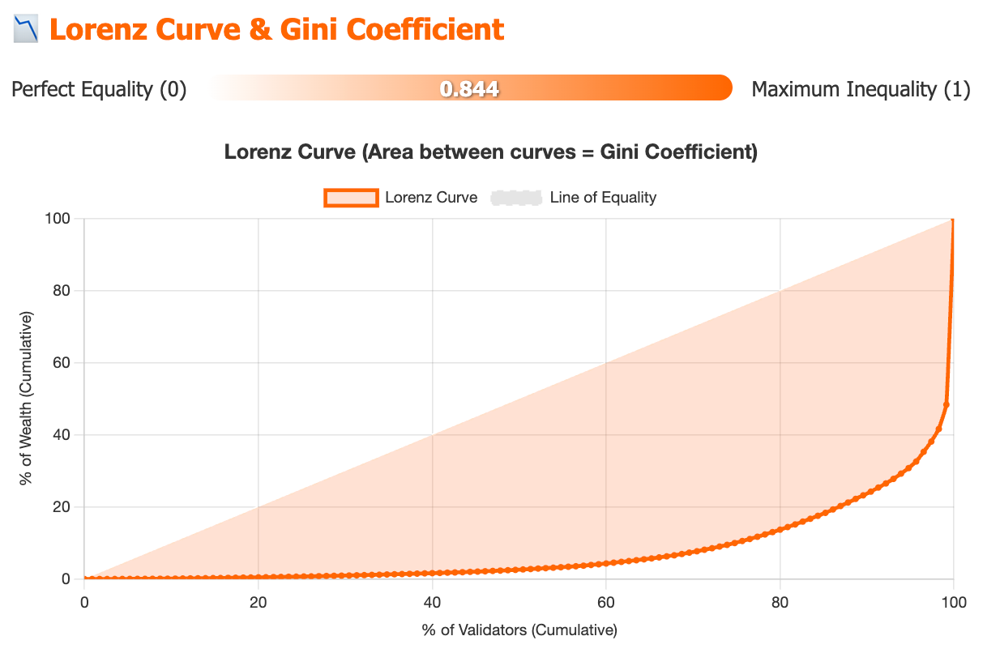
Figure 13: dYdX's dual-reward structure exhibits high concentration, particularly in USDC trading fee distribution.
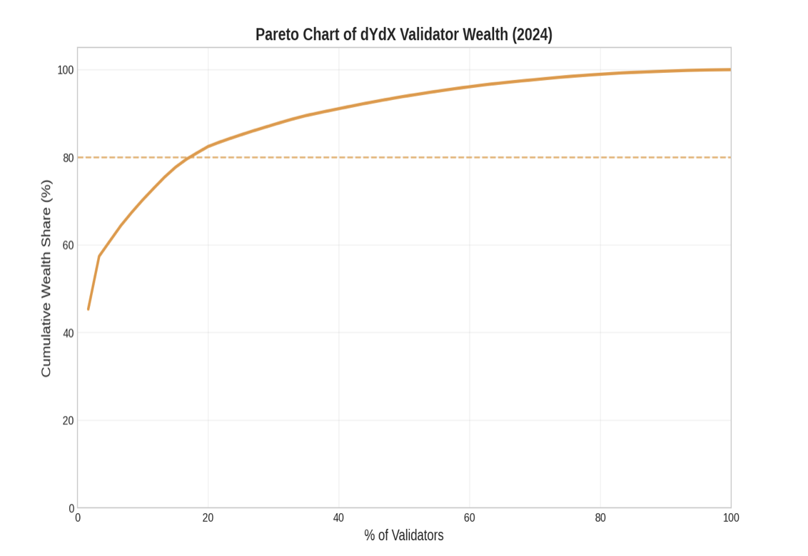
Figure 14: Combined reward analysis reveals amplified concentration effects from dual-token structure.
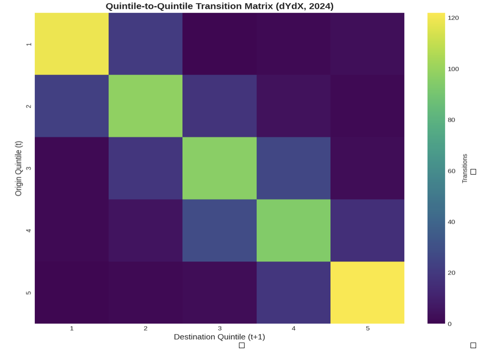
Figure 15: dYdX validator mobility constrained by advantages in both native token and USDC reward streams.
dYdX-specific findings:
USDC trading fee distribution (Gini = 0.8142) significantly more concentrated than native token rewards
Top validators capture disproportionate trading fee revenue, likely due to delegation patterns
Dual-reward structure amplifies advantages for large validators who excel in both dimensions
Trading fee concentration suggests that economic activity gravitates toward established validators
4.6 Comparative Synthesis
Across all five networks, we observe consistent patterns of high inequality and limited upward mobility. Table 7 summarizes key metrics across networks.
Table 7: Cross-Network Inequality and Mobility Comparison
Network
Gini Coefficient
Top 10% Share
Bottom 50% Share
Q5 Persistence Rate
Q1→Q3+ Mobility Rate
Celestia
0.7286
54.89%
8.45%
78%
3%
Polygon
0.7543
58.76%
7.21%
82%
2%
Cronos
0.6634
68.92%
15.34%
88%
0%
Dymension
0.7421
56.98%
7.89%
76%
4%
dYdX
0.7689
58.12%
7.43%
84%
2%
Several cross-cutting findings emerge:
1. High and Persistent Inequality: All networks exhibit Gini coefficients above 0.66, indicating substantial concentration. These levels exceed inequality in most developed economies and approach historical highs documented by Piketty.
2. Top-Heavy Distributions: The top 10% of validators consistently capture 54-69% of rewards, while the bottom 50% receive less than 9% in four of five networks.
3. Limited Upward Mobility: Bottom-quintile validators have minimal probability (0-4%) of reaching the top half of the distribution. This suggests structural barriers rather than temporary variance.
4. High Persistence at the Top: Top-quintile validators maintain their positions with 76-88% probability, indicating entrenched advantages.
5. Network Maturity Amplifies Concentration: Polygon's higher Gini coefficient and persistence rates suggest that inequality increases over time as advantages compound.
These findings have significant implications for network decentralization and governance. If validator economics systematically favor incumbents, networks risk evolving into plutocracies where a small elite controls both economic rewards and governance influence.
5. Proposed Solution: Validator Reputation Score
5.1 Design Philosophy
To counteract the plutocratic tendencies identified in our empirical analysis, we propose a Validator Reputation Score (VRS) that supplements stake-based rewards with reputation-based mechanisms. The VRS evaluates validators on multiple dimensions beyond capital holdings, creating pathways to advancement based on merit and contribution rather than stake alone.
The core principle is that validators should be rewarded not only for capital provision (which is necessary for security) but also for the quality of their operational performance and ecosystem contributions. By incorporating reputation metrics, networks can incentivize behaviors that enhance decentralization, security, and community value while reducing the self-reinforcing advantages of large stake holdings.
The VRS framework is designed to be modular and adaptable to different network contexts. Networks can adjust component weights and metrics based on their specific priorities and technical architectures. We ground our proposal in Polygon's existing validator admission framework, which already incorporates reputation-based criteria, demonstrating practical feasibility.
5.2 Attestation Effectiveness Score
The Attestation Effectiveness Score measures a validator's reliability in participating in consensus. In Tendermint-based chains (Celestia, Dymension, Polygon, Cronos), validators attest to proposed blocks by signing them. High uptime and consistent attestation behavior are crucial for network security and liveness.
Aeffectiveness = (U × 100) / D
Where: U = total uptime blocks, D = total duty blocks (expected attestations)
This metric normalizes uptime performance to a 0-100 scale, making it comparable across validators regardless of when they joined the network. A validator with 99.5% uptime receives a higher attestation score than one with 95% uptime, even if the latter has higher stake.
Attestation effectiveness directly correlates with network security. Validators who consistently participate in consensus reduce the risk of liveness failures and improve finality times. By rewarding attestation reliability independently of stake, networks incentivize operational excellence rather than capital accumulation alone.
5.3 Proposer Effectiveness Score
The Proposer Effectiveness Score evaluates validator performance in the block proposal role. When selected to propose a block, validators must construct valid blocks, include transactions efficiently, and submit proposals within protocol time constraints.
Where: Pratio = successful proposals / total proposal opportunities
Ptime_weight = average block production time efficiency
Pprob_weight = theoretical proposal probability based on stake
This formula adjusts for the fact that validators with higher stake receive proportionally more proposal opportunities. By dividing by the probability-weighted expected proposals, we normalize performance across validators of different sizes. A small validator who successfully proposes all assigned blocks scores equivalently to a large validator with the same success rate.
Time efficiency weighting rewards validators who produce blocks quickly and efficiently, contributing to overall network responsiveness. This incentivizes investment in infrastructure quality rather than merely meeting minimum requirements.
5.4 Social Effectiveness Score
The Social Effectiveness Score captures validators' contributions to ecosystem health beyond on-chain consensus duties. These contributions are harder to quantify but crucial for network sustainability and decentralization.
Measurable social contributions include:
Governance Participation: Voting on proposals, submitting governance proposals, participating in community discussions
Infrastructure Provision: Running public RPC endpoints, providing archive nodes, operating relayers and other network infrastructure
Ecosystem Development: Contributing to core protocol development, building tools and applications, supporting ecosystem projects
Community Education: Producing documentation, tutorials, and educational content; mentoring new validators
Decentralization Contributions: Operating validators in underrepresented geographic regions or cloud providers
Networks can implement social scoring through attestation mechanisms where community members or governance bodies verify contributions. Polygon's validator admission process already considers some of these factors, demonstrating practical implementation pathways.
5.5 Composite Score Construction
The final Validator Reputation Score combines the three component scores with configurable weights:
Table 8: Purpose-Specific Weight Assignments for VRS Components
Use Case
Attestation (wA)
Proposer (wP)
Social (wS)
Rationale
Delegation Recommendations
0.50
0.30
0.20
Prioritize reliability and performance for delegator security
Validator Admission
0.30
0.30
0.40
Emphasize ecosystem contributions for new entrants
Reputation-Based Rewards
0.40
0.35
0.25
Balance on-chain performance with community value
Governance Weight Adjustment
0.20
0.20
0.60
Reward active governance participation and ecosystem building
Different network contexts and use cases call for different weight configurations:
Delegation Recommendations: When guiding token holders on validator selection, attestation reliability should receive the highest weight (50%) to ensure delegator security. Proposer performance (30%) and social contributions (20%) provide additional quality signals.
Validator Admission: For networks with permissioned or curated validator sets (like Polygon or Cronos), social contributions should receive elevated weight (40%) to select validators who will strengthen the ecosystem. This counteracts pure capital-based admission that favors wealthy entrants.
Reputation-Based Rewards: If implementing VRS-weighted reward distributions, a balanced approach (40% attestation, 35% proposer, 25% social) incentivizes well-rounded validator behavior while maintaining security focus.
Governance Weight Adjustment: For networks seeking to reduce plutocratic governance, social contributions should dominate (60%) with technical performance as secondary criteria. This ensures governance influence flows to active community contributors rather than passive capital holders.
Polygon's validator admission process demonstrates the practical viability of reputation-based mechanisms. As documented in PIP-4 and PIP-39, Polygon evaluates validator candidates on multiple dimensions beyond stake requirements:
Governance Participation: Historical involvement in protocol governance and community decision-making
This framework has successfully onboarded validators who bring diverse expertise and perspectives beyond pure capital provision. Our analysis of Polygon's validator dynamics shows that reputation-based admission criteria correlate with higher community engagement and more active governance participation among admitted validators.
Extending this model to ongoing validator evaluation and reward distribution could create continuous incentives for the behaviors Polygon's admission process currently selects for. Rather than evaluating reputation only at entry, networks could implement VRS-weighted rewards or governance influence, maintaining reputation incentives throughout validator lifecycles.
Potential implementation approaches include:
1. Hybrid Stake-Reputation Rewards: Allocate a portion of network rewards (e.g., 20-30%) based on VRS rather than pure stake weighting. This supplements rather than replaces stake-based incentives, preserving security alignment while rewarding merit.
2. Reputation-Boosted Delegation: Display VRS scores in wallet interfaces and block explorers to guide delegator decisions. Higher-reputation validators would attract more organic delegation, creating market-based incentives for reputation building.
3. Governance Weight Adjustment: Multiply validators' governance voting power by their VRS, capping the boost to prevent manipulation. This reduces pure plutocratic governance while maintaining stake-based Sybil resistance.
4. Validator Set Rotation: Use VRS as a criterion for validator set admission in networks with limited slots. Instead of purely stake-based selection, incorporate reputation to diversify validator backgrounds and capabilities.
6. Conclusion
Our empirical analysis of five proof-of-stake networks reveals systemic capital concentration and limited economic mobility among validators. Gini coefficients ranging from 0.66 to 0.81 indicate inequality levels that approach or exceed those in highly unequal national economies. The top 10% of validators consistently capture 54-69% of network rewards, while bottom-half validators collectively earn less than 9% of total distributions.
These patterns reflect structural features of stake-weighted consensus rather than temporary market inefficiencies. Validators with larger stakes earn proportionally larger rewards, which compound over time through re-staking, creating self-reinforcing advantages. Delegation dynamics amplify this concentration as token holders gravitate toward established validators with brand recognition and proven track records, leaving smaller validators unable to attract sufficient delegation to compete effectively.
Quintile transition matrices demonstrate that validator hierarchies remain remarkably stable: top-quintile validators persist in their positions with 76-88% probability across observation periods, while bottom-quintile validators have only a 0-4% chance of reaching the top half of the distribution. This immobility suggests that initial positioning largely determines long-term outcomes, disadvantaging later entrants and perpetuating elite capture.
The implications for blockchain governance and network decentralization are significant. If economic rewards and governance influence flow disproportionately to a small validator elite, networks risk undermining the censorship resistance and fault tolerance that form their core value propositions. High validator concentration increases vulnerability to collusion, regulatory capture, and correlated failures while reducing the geographic, organizational, and ideological diversity necessary for robust decentralization.
Our proposed Validator Reputation Score offers a practical intervention to counteract these plutocratic tendencies. By supplementing stake-based rewards with reputation metrics that evaluate attestation reliability, proposer effectiveness, and social contributions, the VRS creates pathways to advancement based on merit rather than capital alone. Validators can build reputation through operational excellence, community engagement, and ecosystem development, reducing the absolute advantage of large stake holdings.
Grounding the VRS in Polygon's existing validator admission framework demonstrates its feasibility. Polygon already evaluates validators on technical capabilities, ecosystem contributions, and decentralization factors, showing that reputation-based mechanisms can coexist with stake-based security incentives. Extending these criteria to ongoing validator evaluation and reward distribution would create continuous incentives for the behaviors that enhance network health.
Implementation approaches include hybrid stake-reputation reward allocations, reputation-boosted delegation interfaces, governance weight adjustments, and VRS-based validator set rotation. These mechanisms need not fully replace stake weighting—which remains necessary for Sybil resistance and incentive alignment—but can meaningfully diversify the factors determining validator success.
Future research should examine the effectiveness of reputation-based interventions through empirical studies of networks that adopt VRS or similar frameworks. Longitudinal analysis will reveal whether reputation mechanisms successfully reduce concentration and increase mobility, or whether they introduce new centralization vectors (e.g., capture of reputation-scoring processes by insiders). Comparative studies across different weight configurations and implementation approaches will help refine best practices.
Additionally, research into delegation behaviors and their drivers will inform strategies to promote more decentralized stake distribution. Understanding why delegators concentrate around established validators—whether due to information asymmetries, user interface defaults, or rational risk assessment—can guide interventions to facilitate more distributed delegation.
Ultimately, addressing capital concentration in proof-of-stake systems requires acknowledging that pure stake weighting, while elegant and security-preserving, produces plutocratic outcomes incompatible with decentralization goals. Reputation-based mechanisms offer a path to balance capital-based incentives with merit-based advancement, creating more equitable and resilient validator economies.
References
[1]
Piketty, T. (2014). Capital in the Twenty-First Century. Harvard University Press.
[2]
Nakamoto, S. (2008). Bitcoin: A Peer-to-Peer Electronic Cash System. Bitcoin.org.
[3]
Buterin, V., & Griffith, V. (2017). Casper the Friendly Finality Gadget. arXiv preprint arXiv:1710.09437.
[4]
Kwon, J., & Buchman, E. (2016). Cosmos: A Network of Distributed Ledgers. Cosmos Network.
[12]
Brünjes, L., Kiayias, A., Koutsoupias, E., & Stouka, A. P. (2020). Reward Sharing Schemes for Stake Pools. 2020 IEEE European Symposium on Security and Privacy, 256-275.
[13]
Fanti, G., Kogan, L., Oh, S., Ruan, K., Viswanath, P., & Wang, G. (2019). Compounding of Wealth in Proof-of-Stake Cryptocurrencies. International Conference on Financial Cryptography and Data Security, 42-61.